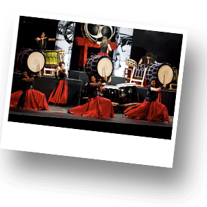

Музыка в Таиланде

Тайцы очень любят музыку. В классической тайской музыке используются не те звуки, к которым привыкли европейцы. В последнее время классическая музыка исполняется в основном только на местных фестивалях. Также, ее можно услышать в туристических ресторанах или, если повезет, в Национальном театре. Классическая тайская музыка сочетает китайские, индонезийские и индийские влияния. В классическом варианте эта музыка исполняется оркестром ударных инструментов. Среди национальных инструментов имеются ударные мелодические, ударные ритмические, духовые и струнные. В музыкальный ансамбль могут входить инструменты всех этих групп или только ударные и духовые. В оркестре бывает от 5 до 20 музыкантов, играющих без дирижера.
Сегодня Таиланд захлестнула волна поп-музыки тайской и зарубежной. Именно такую музыку Вы будете слышать повсюду. Тайская поп-музыка включает лирические мелодии, характерные для западной поп-музыки, но есть в ней и стили, отличающиеся специфическим тайским духом, выражающимся в использовании традиционных инструментов. Временем появления тайской поп-музыки считаются 1980-е годы. В это время стала популярна музыка, которая выражала социальные и политические настроения людей. Тема лирики и любви в песнях почти не поднималась. Первая бангкогская поп-группа - «Карабу». Именно она уловила требования времени, написала и исполнила песню «Сделано в Таиланде». Это хит 1980-х годов. Именно с него и началась культура современной тайской поп-музыки.